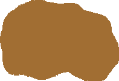

Природоохоронні території міжнародного значення
Об’єкти та номінанти до Списку Всесвітньої спадщини ЮНЕСКО
| Об’єкти Списку Всесвітньої спадщини ЮНЕСКО |
| Номінанти до Списку Всесвітньої спадщини ЮНЕСКО (Tentative List) |
Об’єкти Світової мережі біосферних резерватів ЮНЕСКО
| Біосферні резервати України |
Смарагдова мережа (території особливого природоохоронного значення) в Україні
| Території української частини Смарагдової мережі Європи, офіційно визнані Бернською конвенцією |
| Території, які запропоновані для отримання статусу Смарагдової мережі Європи* |
| * за матеріалами Української природоохоронної групи (UNCG) |
Водно-болотні угіддя міжнародного значення
|  | Водно-болотні угіддя, офіційно визнані Рамсарською конвенцією |
| Водно-болотні угіддя, подані на затвердження Рамсарською конвенцією |
| Перспективні водно-болотні угіддя |